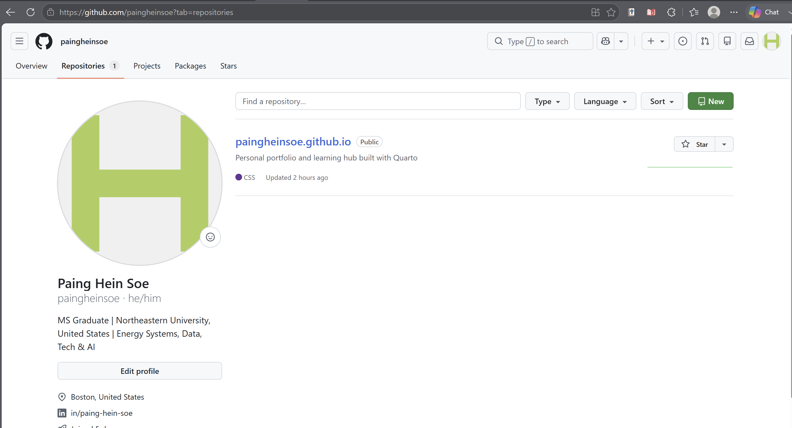
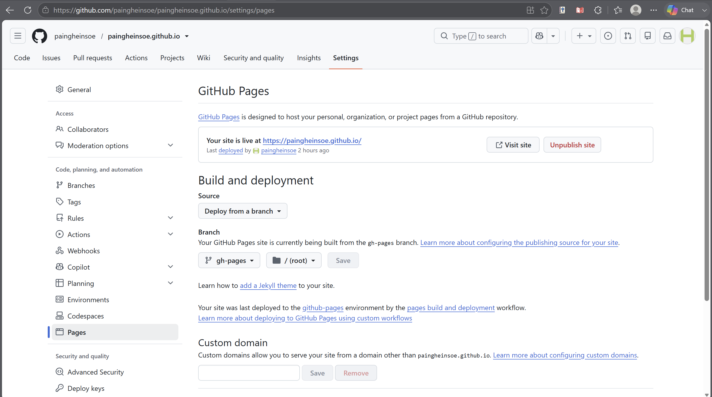

From Quarto to GitHub Pages
What happens between writing and publishing your website?
If you are building a portfolio or personal website with Quarto, Hugo, Jekyll, MkDocs, or a similar tool, the publishing workflow can feel more confusing than the writing itself.
You may already know how to edit files and preview the site locally, but practical questions appear quickly:
- What exactly does GitHub do?
- Why is GitHub Pages separate from GitHub?
- What is the difference between
mainandgh-pages? - When do changes become public?
- Why can’t VS Code publish directly to
username.github.io?
This article organizes the process into three practical stages:
| Stage | What happens |
|---|---|
| 1. Local project → GitHub | Write, preview, version, and store the source |
2. GitHub → gh-pages |
Render the source into website-ready files |
| 3. GitHub Pages → live website | Host and serve those files on the web |
The goal is not to learn every Git command. It is to understand what each part does, why the steps are separate, and what you actually need to do.
If you want to start from installation, project creation, and local preview first, see Getting Started with Quarto.
1. From your local Quarto project to GitHub
A Quarto website normally begins on your own computer.
You might work in VS Code with files such as:
index.qmd
about.qmd
portfolio.qmd
styles.css
_quarto.yml
images/These are your source files. You write and organize them locally.
What is Quarto doing?
Quarto takes source files such as .qmd and renders them into web-ready files such as .html.
index.qmd → Quarto renders → index.htmlWhile developing, you can preview the site locally:
quarto previewAt this point, you can edit, test, and revise without publishing anything.
Where does Git come in?
Git tracks versions of the project.
A common sequence is:
git add .
git commit -m "Update website content"
git pushThese commands do different things:
| Action | What it does | Where it happens |
|---|---|---|
| Edit files | Changes the project | Your computer |
git add |
Selects changes for the next commit | Your computer |
git commit |
Saves a version in local Git history | Your computer |
git push |
Sends committed changes to GitHub | GitHub |
A git commit saves a version locally. A git push sends that version to GitHub. Neither one, by itself, means that the live website has been updated.
What does GitHub do here?
GitHub stores the project online and keeps its commit history.
For a Quarto website, the main branch can contain the editable source project:
main
├── articles/
├── images/
├── index.qmd
├── about.qmd
├── styles.css
└── _quarto.ymlHere is a real example from this portfolio website:

main branch.The key idea is:
GitHub is storing and versioning the project. It is not yet the same thing as serving the finished website.
2. From the GitHub repository to gh-pages
This is often the most confusing step.
If the project is already on GitHub, why do we still need another step?
Because source files and website-ready files have different jobs.
Source project vs rendered website
The main branch may contain files such as:
index.qmd
about.qmd
styles.css
_quarto.ymlA browser ultimately receives web-ready files such as:
index.html
about.html
CSS
JavaScript
imagesSo there is a build step between the two:
Editable Quarto source → Quarto render → Browser-ready websiteFor the branch-based setup used here:
| Branch | Purpose |
|---|---|
main |
Editable source project |
gh-pages |
Rendered website files |
This keeps the source project clean while giving GitHub Pages a branch that contains the finished website.
What command connects them?
With Quarto’s gh-pages publishing method:
quarto publish gh-pagesQuarto renders the site and publishes the website-ready output to the gh-pages branch.
main (source) → quarto publish gh-pages → gh-pages (rendered site)git push updates the source repository.
quarto publish gh-pages updates the rendered website branch.
They solve different problems.
3. From GitHub Pages to the live website
At this point, the rendered files exist in gh-pages.
Something still needs to serve those files to visitors when they open the website URL.
That is the role of GitHub Pages.
gh-pages branch → GitHub Pages → username.github.ioWhy can’t VS Code do this directly?
VS Code is an editor running on your own computer. It helps you create the site, but it is not a public web host that stays available to visitors on the internet.
A live website needs a hosting service that can:
- keep the website files available;
- respond when someone visits the URL;
- send the correct HTML, CSS, images, and other assets to the browser.
In this setup, GitHub Pages provides that hosting layer.
GitHub vs GitHub Pages
| GitHub repository | GitHub Pages |
|---|---|
| Stores the project | Hosts the website |
| Keeps files and commit history | Serves web-ready files |
| Used for development and version control | Used for public web access |
Common source branch: main |
Can serve from gh-pages |
For this portfolio website, GitHub Pages is configured to deploy from the gh-pages branch at the repository root:

gh-pages branch and /(root).Once that configuration is active, visitors see the rendered site at the public URL rather than the source files in the repository.
A practical example: this portfolio website
Putting the three stages together, the workflow used for this site is:
1. Work locally
Edit .qmd, CSS, images, and other files in VS Code.
Preview locally:
quarto preview2. Save and send the source to GitHub
git add .
git commit -m "Describe the change"
git pushThe updated source and commit history are now on the main branch.
3. Publish the website
quarto publish gh-pagesQuarto renders the project and updates gh-pages.
4. GitHub Pages serves it
GitHub Pages reads the configured publishing branch and makes the site available at the public web address.
The complete path is:
VS Code + Quarto → GitHub main → gh-pages → GitHub Pages → Live websiteWhat is private, and what becomes public?
This distinction is worth remembering when you are still testing or drafting.
| Step | Usually local/private? | Public if repository/site is public? |
|---|---|---|
| Edit in VS Code | Yes | No |
git add |
Yes | No |
git commit |
Yes | No |
git push |
No | Yes — source/history can be visible |
quarto publish gh-pages |
No | Yes — published website can update |
So if you want to experiment privately, the safest place is before git push and before publishing.
Is this only a Quarto workflow?
No.
Quarto is one website-building tool. Others include Hugo, Jekyll, MkDocs, Astro, and many more.
The exact commands differ, but the general pattern is common:
Create → Version/store → Build → Host → VisitThe hosting service also does not have to be GitHub Pages. Depending on the project, people may use services such as Netlify, Vercel, or Cloudflare Pages.
The useful idea is the separation of roles:
- editor/site generator — create the project;
- Git/GitHub — version and store it;
- build/publish step — create the web-ready output;
- hosting service — serve it to visitors.
Quick reference
For the setup used in this article:
# Preview locally
quarto preview
# Save a source version
git add .
git commit -m "Describe the change"
# Send source to GitHub
git push
# Render and publish the live website
quarto publish gh-pagesIf you remember only three things:
mainkeeps the editable source project.gh-pagescontains the rendered website in this deployment setup.- GitHub Pages serves those rendered files as the public website.
Once those roles are clear, the publishing workflow becomes much easier to manage.